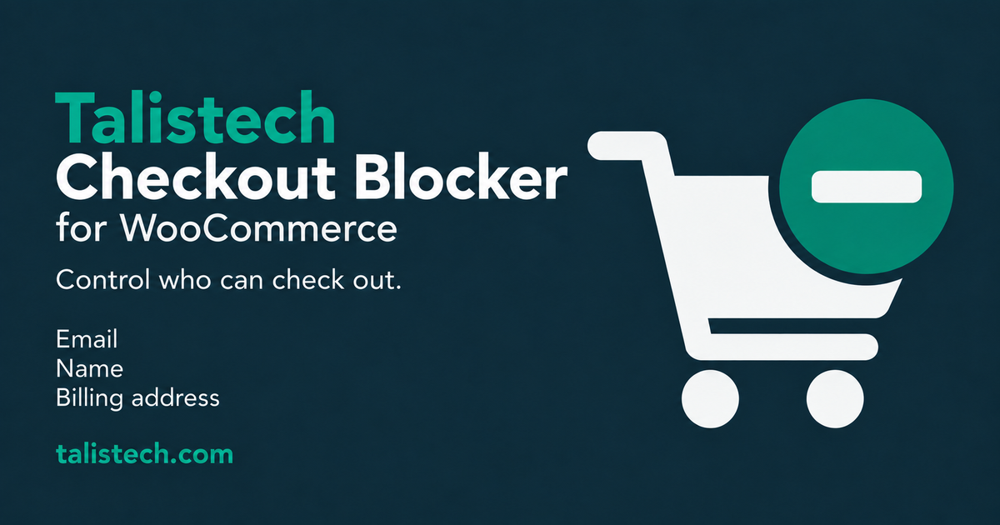
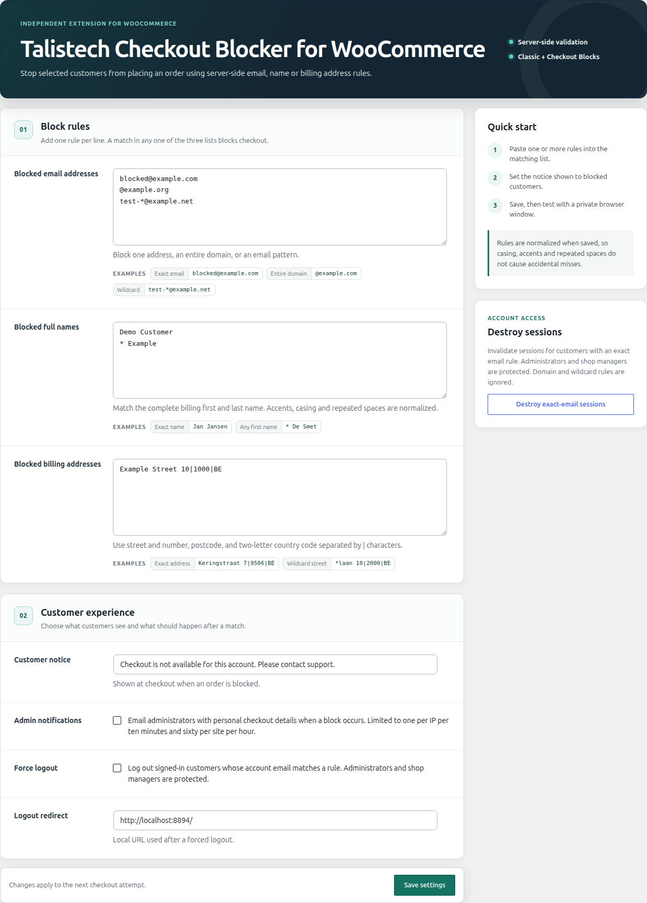
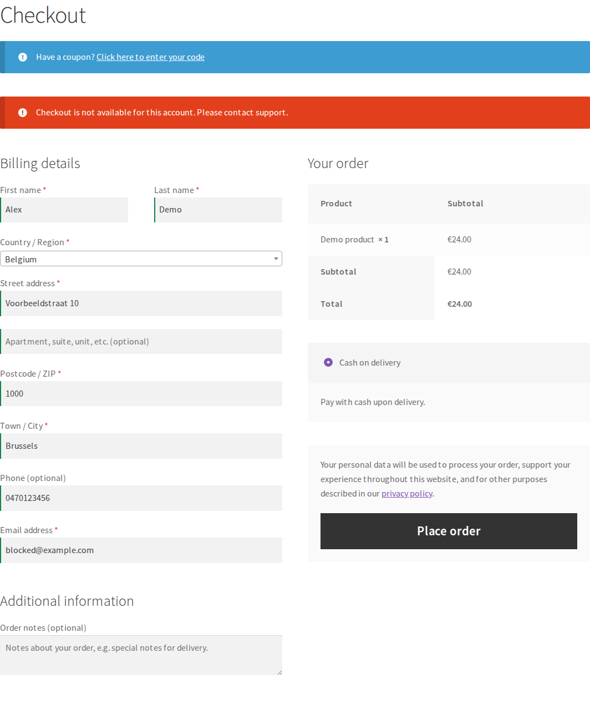

Talistech · media pack · 1.2.1Talistech Checkout Blocker
for WooCommerce
Directory assets, avatar, social artwork and real product screenshots. Click an image to view its full-size export.
Usage guide · File manifestArtwork & exports
wordpress-org/icon-128x128.png128 × 128 pxWordPress.org search and plugin list icon
Download PNGwordpress-org/icon-256x256.png256 × 256 pxWordPress.org Retina plugin icon
Download PNGavatar/avatar-1024x1024.png1024 × 1024 pxPlugin avatar for profiles and directories
Download PNGwordpress-org/banner-772x250.png772 × 250 pxWordPress.org plugin page banner
Download PNGwordpress-org/banner-1544x500.png1544 × 500 pxWordPress.org Retina plugin page banner
Download PNG
social/social-1200x630.png1200 × 630 pxSocial link preview and landscape announcement
Download PNGsocial/social-1080x1080.png1080 × 1080 pxSquare social announcement
Download PNGSmall-size & avatar preview
32 px · 64 px · 128 px · circular avatar
Real product screenshots

wordpress-org/screenshot-1.png1238 × 1725 pxReal plugin settings page with synthetic block rules
Download PNG
wordpress-org/screenshot-2.png1063 × 1267 pxReal classic checkout refused for blocked@example.com
Download PNG